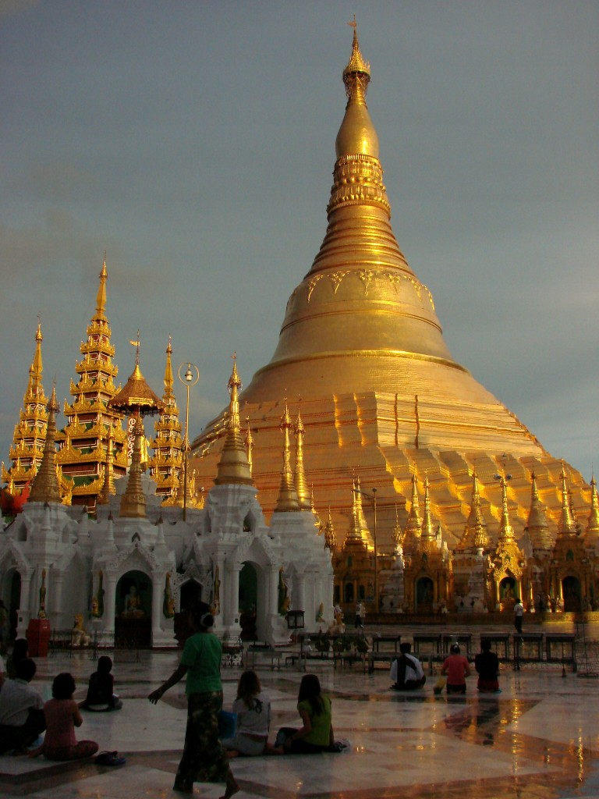

Moje trzytygodniowe birmańskie wakacje miały miejsce 6 lat temu (To zdanie zostało napisane w 2013 roku).
Kiedy czytam teraz swoją opowieść i wrażenia, trudno mi się czasami nie roześmiać, bo po 6 latach i iluś kolejnych podróżach, pewne wnioski wydają się (z puntku widzenia 'ja teraz’) zabawne czy naiwne i aż się zaczynam zastanawiać co będę myślała o moim podróżowaniu za kolejne x lat:)
Ale powspominam, bo do Birmy mam stosunek wyjątkowo sentymentalny i nawet zdjęcia z przesadzonym kontrastem z Picassy mnie raczej rozczulaja niż wkurzają.
Poniżej moje fragmenty opowieści sprzed lat (opublikowane na pinezka.pl i komentarze z 'teraz’:)
POCZĄTEK
(2007):
A więc zaczynając od początku:
Wylądowaliśmy w Rangunie, dawnej stolicy (niedawno przestał być stolicą, bo rząd postanowił, że nowa stolica powstanie w zupełnie nowym miejscu).
No więc Rangun to chyba najbrudniejsza stolica jaką kiedykolwiek widziałam – po raz pierwszy będąc gdzieś i idąc pierwszy raz ulicami nie miałam ochoty się gdzieś zatrzymać, usiąść, poczekać….
Ha! A wyobraźcie sobie pierwsze wrażenia trzech koleżanek, dla których to w ogóle było „First time Asia”!
Ale nie, nie załamałam się od razu na samym początku… Wręcz przeciwnie, podobało mi się. Nie miasto bynajmniej… ale ludzie.
Zatrzymałyśmy się w guesthousie, o którym w przewodniku napisano, że ma tylko jedną wadę: ludzie stamtąd są zbyt mili!! I dokładnie tak właśnie było – jak więc mogłybyśmy się nie cieszyć, że tam przyjechałyśmy?
Hmm… Ale przecież miało być od początku.
A więc już na lotnisku nam się spodobali… miejscowi faceci ubrani w białe koszule i longyi (taka jakby spódnica jak sarong) i kobiety z twarzami wymalowanymi thanaką…
No i oczywiście wiedziałam, że jedziemy w porze deszczowej i będzie niewielu turystów, ale nie spodziewałam się, że może ich być aż tak mało… Pierwszego dnia chodząc po mieście spotkaliśmy może dwie czy cztery białe osoby!!! Ja rozumiem, że w sześciomilionowym mieście turyści mogą jakoś zginąć w tłumie, ale żeby AŻ TAK?
Wyobrażałam sobie, że wszystko będzie o wiele trudniejsze, ale początki były zdumiewająco łatwe..
(2013):
Do tej pory, kiedy przypomnę sobie podróż, to pierwsza rzecz jaka mi przychodzi do głowy to właśnie to pozytwne, optymistyczne i przyjazne nastawienie Birmańczyków i ich stosunek do turystów – coś czym byłyśmy na początku zaskoczone, a potem nieustannie zachwycone na każdym kroku. I przez wiele lat Birma dzierżyła dla mnie palmę pierwszeństwa w kategorii 'ogromnie mili ludzie’.
Co do brudu i rozpadającej się stolicy – wielokrotnie widziałam bardziej brudne i zadniedbane miejsca, ale wtedy to był dla mnie naprawdę szok – pierwszy raz coś takiego. Z tym, że jednak fakt, że rozpadające się budynki są kolorowe, a ludzie wokół życzliwi mają ogromny wpływ na postrzeganie kraju jako całość.
Co do jedzenia na uliczy z bardziej lub mniej higienicznych miejsc… też mi się to zmieniło – i to raczej w stronę 'uważaj co jesz, ale nie przejmuj się za bardzo i jak tylko możesz to próbuj co się da’!
O PODRÓŻOWANIU
(2007):
Wiele osób mówiło mi, że drogi są kiepskie. No i były.
Pierwsza jazda autobusem co prawda zaczęła się dobrze, ale po trzech godzinach autobus się zepsuł i czekaliśmy kolejne trzy aż przyjedzie następny… Ale najciekawsze w tym wszystkim były reakcje ludzi. A w zasadzie brak reakcji… i spokój. Ot, autobus jechał i jechał… i się zatrzymał. I ludzie siedzieli i siedzieli. Część wyszła. My też wyszłyśmy, a tam też siedzieli po ciemku… Gadali, palili, pluli (o tym będzie później) i czekali. I nikt się nie denerwował.
Potem zamienny autobus przyjechał i nastąpiło sprawne przepakowanie (nasze plecaki znajdowały się np. pod stertą jakichś turbin) i pojechaliśmy dalej.
O wiele ciekawsze było podróżowanie lokalnym autobusem.
Zapakowali ludzi.
Potem bagaże: do bagażnika, pod siedzenia, na dach.
Potem było coraz więcej ludzi. Każdy dostawał miniaturowe krzesełko i siadał na środku.
Potem niektórzy siedzieli na dachu.
Potem wsiadła kobieta z czterema workami ryżu (tak na oko każdy ok. 50 kg).
Kolejni ludzie siedzieli już na workach z ryżem.
W pewnym momencie obok kierowcy znajdowało się jakieś osiem osób (stojących bądź siedzących) tak, że nasz „pilot” wisiał prawie za autobusem…
No właśnie, „pilot”.
W latach siedemdziesiątych jakiś generał usłyszał od doradcy, że kraj powinien się przesunąć bardziej na prawo. No to się kraj przesunął: zmienili ruch z lewostronnego na prawostronny. Cały dowcip polega na tym, że kierownice w większości samochodów są na „złych” miejscach, więc kierowca niewiele widzi, więc potrzebuje pilota, który w zasadzie wręcz wystaje z autobusu i, jakby to powiedzieć, steruje?
Jak podaje przewodnik: birmański autobus jest pełen wtedy, kiedy już nie ma miejsca do trzymania się i zwisania.
W malutkim pick-upie doliczyłam się kiedyś 16 osób. Wydawało mi się, że to dużo, ale gdy my cztery wyszłyśmy, na nasze miejsce zmieściło się jeszcze siedem osób.
Taksówki to też dobra zabawa.
W jednej się dziwili, że nie chcemy siedzieć we cztery razem z tyłu, no bo przecież powinnyśmy się zmieścić bez problemu.
W innej pani przewodnik (obowiązkowa) wepchnęła się pomiędzy mnie i kierowcę i siedziała na rączce od skrzyni biegów, podnosząc nogę, kiedy wciśnięty trochę w kąt kierowca chciał zmienić biegi (np. kiedy raz osiągnął oszałamiającą wręcz prędkość 62 km na godzinę).
W innej kierowca najpierw pluł przez okno, a potem śpiewał.
Jakimś cudem nie jechałyśmy wozem zaprzężonym w woły, na którym było napisane „taxi” – stwierdziłyśmy, że się przejdziemy…
(2013):
Zaledwie rok minął, a już wspominałam z rozbawieniem historię kiedy to uważałam, że trzy osoby na tylnym siedzeniu w taksówce za którą się płaci to max (pojazdy za które się nie płaci to zupełnie inna sprawa:D) – rok później mi się wydawało, że 4 osoby z tyłu to całkiem porządny sposób na podróżowanie.
Co mi nie minęło do tej pory, to moje uwielbienie dla tego typu transportu – czasami jest bardziej weselej czasami mniej, ale ZAWSZE jest to niesamowita okazja do obserwacji. W Polsce czasami też.
O TURYSTACH
(2007)
Jak już wspomniałam, turystów było stosunkowo niewielu.
Oczywiście w innych miejscach więcej niż w Yangonie, ale wciąż można powiedzieć, że mało.
Z czym to się wiązało?
Z tym, że ciągle spotykałyśmy po drodze „znajomych” poznanych gdzieś wcześniej.
Z tym, że tylu ludzi nas zagadywało, rozmawiało z nami, interesowało się.
Z tym, że czasami byłyśmy same w knajpie.
Czasami na drogach widziałyśmy różne dziwne hasła.
Jedno, nad jeziorem Inle, przy drodze wjazdowej, brzmiało: „Please provide all
the necessary assistance to our foreign tourists” – po angielsku i birmańsku.
Hasło może brzmi strasznie propagandowo, ale ludzie byli NIESAMOWICIE pomocni.
(2013):
Najbardziej mnie zaskakuje to jak wzrosła liczba turystów odwiedzających Birmę – podczas mojej podróży tych turystów było niewielu, teraz wiele osób skarży się na ceny czy problemy ze znalezieniem noclegów.
Ktoś na jakimś blogu napisał opowieść jak to x lat temu załatwiał wizę birmańską w ambasadzie w Bangkoku i było tylko kilka osób, a w tym roku był dziki tłum jak kiedyś w Polsce przed ambasadą amerykańską…
Ta niewielka liczba turystów była czymś fantastycznym – ponieważ wszyscy podróżowali po dosyć typowej trasie, ciągle się spotykało 'znajomych’, ceny były przyjemne, brak tłoku gdziekolwiek…
O WIDOKACH
(2007):
Nie wiem, jak to opisać w paru słowach, więc tylko podam kilka przykładów:
Bagan.
Na obszarze ok. 42 km² znajduje się ponad 3 tysiące (!) różnego rodzaju świątyń.
Jechałyśmy wozem zaprzężonym w konia, powoli, często piaszczystymi drogami pomiędzy świątyniami, od świątyni do świątyni… I się zachwycałyśmy.
I tak cały dzień.
A potem cały drugi dzień.
„Jezu, jaka sielanka” – powiedziała drugiego dnia moja koleżanka.
A jak się wchodziło na jakąś wysoką świątynię, z góry widać było mnóstwo, mniejszych i większych, pagód i stup.
Zachód słońca był średni, ale kiedy słońce na kilka minut wyszło zza chmur i oświetliło drugą stronę (byłyśmy na jakimś czwartym tarasie)… to dopiero był widok! Setki ceglanych budowli oświetlonych miękkim łagodnym światłem, pogrążone w soczystej zieleni na tle coraz ciemniejszego i ciemniejszego nieba…
(2007):
InleLake.
Duuuuuże jezioro otoczone górami. Jezioro, którego w zasadzie się nie da obejść. Na którego powierzchni rosną wodne hiacynty i na którym znajdują się ogrody z pomidorami. Z domami na palach. Z porośniętymi kanałami po bokach.
Któregoś, kolejnego już dnia płynęłyśmy łodzią. Niestety, widziałyśmy, że wpływamy w obszar deszczu. Zmoczyło nas niesamowicie. A potem zatrzymałyśmy się przy bardzo długim mostku pod małym dachem czekając, aż przestanie padać. Ludzie szli, mokli… Niektórzy szybko, chroniąc się przed deszczem, inni, już całkowicie zmoknięci, nie przejmowali się niczym i szli spokojnie.
A potem nad niesamowicie zielonymi polami ryżu pojawiła się jaskrawokolorowa tęcza. A potem druga.
Wracałyśmy z wioski i znowu zaczęło padać. Płynęłyśmy kanałem – trzymałam parasolkę nad samą głową, ale na chwilę ją odsunęłam i zobaczyłam, że po jednej stronie nad górami mamy zachód słońca, a po drugiej stronie nad górami znowu kolejna tęcza – tak kolorowa, jakby była z neonów.
No i powiedzcie – jakbym mogła siedzieć wtedy pod parasolką?
(2013):
Do tej pory wspominamy Inle jako 'wakacje pod bambusem’ bo spędziłyśmy tam chyba pięć dni: pływanie po jeziorze, trekking po okolicznych górach, spacery wokół… Świetne knajpy, tanie drinki, fotogeniczne miejsca – ogromnie bym chciała tam kiedyś wrócić…
(2007):
Kalaw.
Trekking w górach, podczas którego szłam w największym w swoim życiu błocie w butach („Chinese army shoes”) zakupionych dzień wcześniej na targu za całe 4 zł 96 gr.
I tak szłyśmy sobie – trochę było ślisko. Czasami padało. Czasami mijałyśmy pola ryżu górskiego. Czasami pola zielonej herbaty. Weszłyśmy do kilku wiosek, klasztorów…
KAKKU
(2013):
Jedno z najbardziej niesamowitych miejsc odwiedzonych w Birmie – bo oprócz nas nie było tam nikogo, a cisza była przerywana przez tysiące metalowych dzwoneczków.
Hm… właściwie to nie było ciszy, tylko wiatr i te dzwoneczki..
O ALKOHOLU
(2007):
W zasadzie nie mam pojęcia, dlaczego swoich opisów nie zaczęłam od tego, jakże istotnego, tematu. Niektórzy podróżnicy twierdzą, że należy pić dla zdrowia – no wiecie… bo flora bakteryjna inna, żeby nie zachorować, etc. Być może niektórzy w to faktycznie wierzą, ale podejrzewam, że dla większości to zwykła wymówka, żeby pić, pić i pić.
Nam w zasadzie od początku towarzyszył R U M. Myanmar Rum lub Mandalay Rum. Do tego miejscowa Star Cola i pól kilo limonek, których prawie nie dało się wycisnąć, i impreza trwała do późnych godzin nocnych… czyli do jakiejś 22, kiedy to padałyśmy zmęczone. Myanmar Rum był lepszy, bo nierozwodniony, ale z drugiej strony Mandalay Rum też… był lepszy, bo można go było pić bez coli. Kiedy drugi raz trafiła nam się wersja rozwodniona, postanowiłyśmy przy kolejnych zakupach próbować na miejscu – trzeba było widzieć zdziwienie sprzedającej dziewczyny, kiedy na miejscu otworzyłyśmy butelkę i po kolei każda z czterech osób sobie pociągnęła z gwinta. Próba udała się, kupiłyśmy więc kolejną butelkę. Chociaż… gdyby się nie udała… pewnie i tak nie kłóciłybyśmy się. W końcu było to tylko 1 złoty 60 groszy za butelkę…
Kiedyś w Mandalay weszłyśmy do baru czekając na występ Moustache Brothers. Nikt nie mówił po angielsku. Nie było tam żadnych turystów. Nie było tam też żadnych kobiet (z wyjątkiem kelnerki). Zamówiłyśmy piwo. No i się na nas patrzyli, i patrzyli, i patrzyli – dwóch mężczyzn sobie nawet krzesła przestawiło, żeby mieć lepszy widok… Myanmar Beer – wcale nie gorsze od polskiego.
Albo pizzeria w Inle – pizza była rewelacyjna, ale jeszcze lepsze były drinki – Caiphirinia, Mojito, Pinacolada – 2 złote za DUŻEGO drinka – czy można się dziwić, że trzeciego dnia kelner wołał do nas na ulicy Hello! ?
(2013):
Żeby tylko nie wyszło, że dużo piję…;)
Ponoć gorąca herbata ma w tropikach właściwości podobne do alkoholu – zapobiega DROBNYM problemom żołądkowym, tyle tylko, że komu by w upałach sprawiała przyjemność gorąca herbata?
O JEDZENIU
Wszyscy moi znajomi wiedzą, że w Azji w zasadzie nie podoba mi się jedna rzecz – jedzenie. I zdaję sobie sprawę, że jestem dla nich jakimś kuriozum, bo zwykle oni zachwycają się kuchnią azjatycką. Z drugiej strony – muszę spróbować absolutnie wszystkiego, więc pisać mogłabym długo, ale w skrócie to tak:
– sałatka z zielonej herbaty z orzeszkami: smak dziwny, lecz interesujący, choć konsystencja mało zachęcająca. Zostałyśmy nią poczęstowane w trakcie trekkingu;
– durian: kolejna próba przekonania się. Kolejna nieudana próba. Co prawda zapach (czy raczej smród) nie powstrzymuje mnie przed jedzeniem, chociaż faktycznie należy do mało przyjemnych, ale konsystencja przypominająca banany też mnie jakoś specjalnie nie przekonuje;
– jackfruit: który po raz pierwszy widziałam na drzewie i był OGROMNY! Czytałam, że może ważyć nawet do 35 kilogramów – nasz nie ważył nawet połowy, ale i tak był dla mnie wielki. I o wiele lepszy od duriana – bardziej orzeźwiający.
– naleśnik z jajkiem sadzonym: nie jest to co prawda typowa potrawa, ale… przepyszna;
– mohingar: dziwna rybna zupa, którą jadłyśmy na śniadanie, z makaronem ryżowym. Ciekawe doświadczenie – ale jedna próba naprawdę wystarczyła. Poza tym, co to za pomysł, żeby jeść zupę na śniadanie?
– chapati (czyli płaski typowy chlebek – w różnych wersjach spotykany w różnych krajach) z ciecierzycą: moje ulubione śniadanie;
– sałatka z ziemniaków: nie spodziewałam się, że będę tam jeść cokolwiek innego niż ryż i makaron, więc jak tylko zobaczyłam w menu sałatkę z ziemniaków, nie mogłam jej nie zamówić. I była to najlepsza sałatka z ziemniaków, jaką kiedykolwiek jadłam! Z sokiem z limonki i z olejem sezamowym – próbowałam odtworzyć ten smak tutaj, ale, niestety, bez powodzenia;
– curry z wołowiny z pastą sojową i liśćmi limonki: niebo w gębie! Spróbowałyśmy, bo było wymienione w przewodniku, i… wspominałyśmy to danie jeszcze dwa tygodnie później. Jeśli kiedyś traficie do Mandalay, KONIECZNIE idźcie do Green Elephanta i spróbujcie!
Jak na osobę, która nie lubi azjatyckiej kuchni, to trochę dziwnie się rozpisałam. Szczerze mówiąc to mogłabym tak pisać i pisać, bo jedzenie i picie to naprawdę fascynująca część moich podróży.
(2013):
Z podróży po Azji została mi ogromna niechęć do ryżu – i mimo, że minęło wiele lat wciąż ryżu nie lubię i cierpię za każdym razem w miejscach gdzie ryż jest popularny – a na razie wychodzi, że wszędzie poza Europą jest!
Na szczęście wszędzie znają też frytki…
O DZIWNYCH, CIEKAWYCH I MIŁYCH (LUB NIE) PRZYPADKACH…
(2007):
Four Sisters to pensjonat, który nam polecono. Nie udało nam się jednak tam zatrzymać, więc postanowiłyśmy chociaż wybrać się na kolację. Nieduży, niepozorny budynek, przed którym spotkałyśmy jedną z czterech sióstr.
Zaczęła wymieniać nazwy jakichś dań i tak naprawdę nie było wiadomo, o co chodzi. Lekko zdezorientowane weszłyśmy do środka, siadłyśmy w pustym pokoju z kilkoma stołami i czekamy. Czekamy, czekamy… w sumie już nas to nie dziwi, bo wszędzie na jedzenie trzeba czekać. Jednak po pewnym czasie zaczynamy się niepokoić, bo nikt nie przychodzi zapytać, CO chciałybyśmy zjeść.
Potem pojawia się siostra nr 2. Pyta się, czego chcemy się napić.
A o jedzeniu dalej nic nie słychać…
Aż w końcu przynoszą… Jedno danie, drugie, trzecie, czwarte, piąte… Ach! Więc to, co siostra nr 1 wymieniała przed drzwiami, to było wszystko, co mają tego dnia! Jemy więc – jedną z lepszych kolacji w ciągu całego naszego pobytu. Nawet ja musiałam przyznać, że dania były rewelacyjne.
– Ile płacimy?
– Star Cola kosztuje 300 kyatów za butelkę.
– A dania?
– Ile chcecie. To zależy jak bardzo wam smakowały…
Ostatnia kolacja to ważna rzecz. Nie mogłam więc pozwolić, żeby ktoś inny decydował o tym, gdzie jeść. Na szczęście dziewczyny zgodziły się, że trzeba jakoś uczcić ostatni dzień pobytu w Birmie – poszłyśmy więc do Singapore’s Kitchen, gdzie, jak twierdził przewodnik Lonely Planet, były jedne z lepszych chińskich dań w mieście.
Czekałyśmy na zamówienie, więc Asia poszła do łazienki.
– I jak tam łazienka?
– Aaaa…w porządku. Drzwi się nie zamykają, kibel azjatycki. Spoko.
Czyli wszystko w normie. Więc Sylwia też poszła.
– Zapomniałaś powiedzieć, że jest decha zamiast okna i że myszy biegają…
No tak. Czyli faktycznie wszystko w normie. I tak, prowadząc rozmowę, czekamy dalej. Aż w pewnym momencie Asia się schyla i przygląda czemuś koło stołu:
– Czy myślicie, że to karaluch?
– Nie, chyba za duży.
– Ale przecież karaluchy są takie wielkie.
– Aaaaaaa! On idzie do mnie!!!
Słysząc krzyk, siedzący w drugim rogu sali kelnerzy nadbiegli z pomocą i jeden z nich uratował nas z opresji, wykopując karalucha na drugi koniec sali. I może wcale nie zaczęłybyśmy się śmiać, gdyby Elwira nagle nie spojrzała w górę na okno:
– Ooo… zobaczcie jaki wielki pająk!
A jedzenie, które zaraz przynieśli, było naprawdę smaczne. Zwłaszcza że żadne inne zwierzęta już nam nie zakłócały posiłku.
(2013):
Na środku jeziora coś stało, wyszłyśmy z łódki, weszłyśmy do środka.
– Hmmm… a to na środku o co, ziemniak?
– Ale po co komuś złoty ziemniak?
– Trudno powiedzieć, ale jak nie ziemniak to co to?
Nasz sternik był wyjątkowo mało komunikatywny więc 'tajemnica wyjaśniła się dopiero wieczorem, po przeczytniu przewodnika: była to Pagoda Phaung Daw OO, a to co wzięłyśmy za ziemniak to Budda, na którego ludzie w podzięce przyklejają płatki złota – no i tak dziękowali, że Budda stracił swój kształt, tyle tego złota było…
O ŻYCIU
(2007):
Pierwszy raz byłam w tak biednym kraju. W tak biednym, że tę biedę było widać wszędzie wokół. Naprawdę nie wiem, czy umiem wam o tym opowiedzieć.
Bo nigdy wcześniej nie widziałam ludzi mieszkających w rozpadających się chatach, ze stertami śmieci przed domami, które topiły się w kałużach.
Bo do tej pory nie spotkałam nikogo, kto przez miesiąc zarabia tyle, ile we cztery wydawałyśmy na zwykły (i dosyć tani dla nas) obiad w restauracji.
I kiedy w Polsce podchodzi do kogoś żebrzące dziecko, to chce pieniędzy, a nie rzuca się na banana, którego dostanie.
Nie wiadomo też, jak odpowiedzieć na pytanie: „Ile lat musiałaś oszczędzać, żeby tu przyjechać?” – zadane przez sympatyczną dziewczynę na Wzgórzu Mandalay, która opowiada, jak co tydzień przychodzi na schody, żeby porozmawiać z cudzoziemcami i poćwiczyć swój angielski.
I nie potrafię też sobie wyobrazić, jak to jest ciągnąć wóz, bo się nie ma wołu.
Każdy turysta postrzegany jest jak ktoś, kto ma pieniądze. Bo nawet jeśli ja mam ich niewiele, to i tak dla tych ludzi to dużo. I tak naprawdę, to ja jestem tylko turystą.
(2013):
To, że podróże kształcą to taki truizm, ale… w zasadzie w moim przypadku to trudno to inaczej określić. To co widziałam, czego doświadczyłam i o czym rozmawiałam zmieniło moje podejcie do życia i rozumienie świata.
Oczywiście moglibyśmy się spierać czy na lepsze i czy we właściwą stronę, ale nie mam wątpliwości, żeby gdyby nie te wszystkie podróże byłabym zupełnie innym człowiekiem.
I nie chodzi tylko o świat, myślę, że moje postrzeganie Polski i stosunek do mojego życia tu i teraz też się zmienił.
O POLITYCE
(2007):
Jak już wspomniałam, każdy turysta w Birmie sam musi sobie odpowiedzieć na pytanie, gdzie wydaje swoje pieniądze, bo część z nich zawsze i tak trafi do rządu – można się jedynie starać, żeby trafiło ich tam jak najmniej.
Jechać czy nie jechać? Jedni mówią że nie – tak na przykład twierdzi Aung San Suu Kyi – birmańska laureatka pokojowej nagrody Nobla, od wielu lat znajdująca się w areszcie domowym. Inni twierdzą, że turyści są potrzebni krajowi i zwykłym ludziom, którzy tam mieszkają – wśród nich są na przykład Moustache Brothers, z których jeden, Par Par Lay (wspomniał o nim nawet Hugh Grant w filmie Był sobie chłopiec), spędził kilka lat w więzieniu za opowiadanie dowcipów.
Junta kontroluje wszystko. Turysta jest bezpieczny i traktowany dobrze, ale w wiele miejsc po prostu nie jest w stanie się dostać, a tam, gdzie chce jechać, często musi podać dane z paszportu. Turysta widzi tylko to, co mu się pokazuje – a skoro to, co widzi, jest przerażające, jakie musi być to, czego nie widzi? W czasie mojego pobytu w wiadomościach pojawiła się informacja o konferencji ASEAN (Stowarzyszenie Narodów Azji Południowo-Wschodniej) – w telewizji mówiono o niemożliwości porozumienia się z powodu łamania praw człowieka w Birmie, a w birmańskiej anglojęzycznej gazecie pojawiła się informacja o „pewnych” trudnościach.
Im więcej ludzi odwiedzi Birmę, tym więcej ludzi ją pozna, opowie innym. Tym więcej będzie wiadomo o tym, co się tam dzieje. Może wtedy będzie trudniej zagłuszać ludzi, blokować Internet, ograniczać, uciskać, podporządkowywać? Bo na razie dla wielu osób Birma jest jakimś tam krajem, gdzieś tam daleko – w zasadzie to nawet nie za bardzo wiadomo gdzie. Wielu moich znajomych, którzy wcześniej nawet nie mieli pojęcia gdzie leży Birma – teraz już coś o niej wie. Z moich opowiadań, zdjęć. I wiem, że słysząc wiadomości o Birmie, już nie puszczają ich mimo uszu, tylko słuchają. Wiem, bo potem pytają: A czy słyszałaś, że….?
Cieszę się, że mogłam poznać Birmę – żaden kraj do tej pory nie zrobił na mnie takiego wrażenia. Mam tylko nadzieję, że kiedy pojadę tam po raz kolejny, będzie to już lepszy, inny kraj.
(2013):
Birma się zmienia. Turystów jest więcej i pewnie trafiają w więcej miejsc. Internet stał się dostępny – w czasie mojego pobytu wysłanie jakiegokolwiek maila było niemożliwe, albo bardzo mało prawdopodobne – ze względu i na ograniczenia i na szybkość (czy też brak szybkości) Internetu.
Aung San Suu Kyi została nie tylko wypuszczona z aresztu domowego ale i odbyła podróż po Europie (chociaż akurat polskie media nie poświęcały temu wiele miejsca) a Luc Besson nakręcił o niej film 'The Lady”.
Zmiany mnie cieszą, ale jednocześnie cieszę się, że byłam tam kiedy był to jeszcze kraj mniej popularny wśród turystów.
Kiedyś na pewno jeszcze tam wrócę.
I na pewno wrócę z lepszym aparatem, bo to kraj bardzo przyjazny fotografowi-amatorowi!
A więc na koniec parę ulubionych zdjęć.
Najdłuższy tekowy most:
Pagoda Szwedagon w Rangunie:

Kobieta w Bagan paląca miejscowe cygaro:
Mężczyzna w pracy:
Dzieci przy drodze:


{kind=link}
{kind=link}
{kind=link}
{kind=link}
{kind=link}
{kind=link}
{kind=link}
{kind=link}
{kind=link}
{kind=link}
{kind=link}
{kind=link}
{kind=link}
{kind=link}
{kind=link}
{kind=link}
{kind=link}